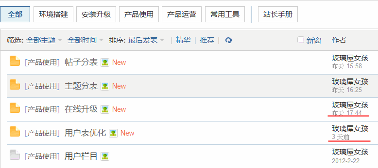
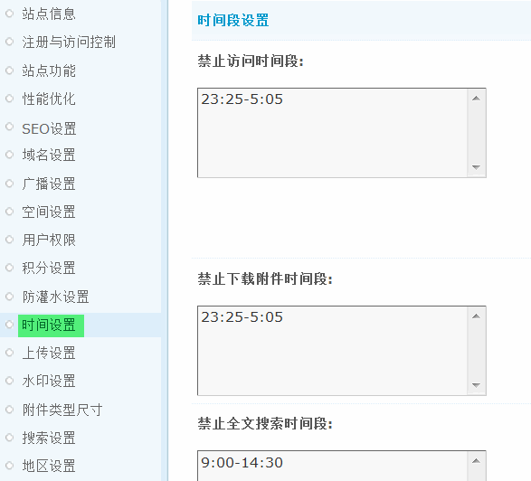

时间设置
时间设置包括前台所有的日期和时间格式显示样式，默认日期/时间格式、默认时差、禁止访问时间段、禁止下载附件时间段和禁止全文搜索时间段等相关设置。下面一一讲解。
1、时间和日期格式
1)默认日期格式
使用 yyyy(yy) 表示年，mm 表示月，dd 表示天。如 yyyy-mm-dd 表示 2012-3-31
2)默认时间格式
分为24 小时制和 12 小时制
3)人性化时间格式
选择“是”，站点中的时间将显示以“n分钟前”、“昨天”、“n天前”等形式显示。
4)默认时差
一般设置为8，指北京时间东8区，如果论坛时间不准确可调整，0.1代表6分钟，可设置为负数。
2、时间段设置
1)禁止访问时间段
每天该时间段内用户不能访问站点，请使用 24 小时时段格式，每个时间段一行，如需要也可跨越零点，留空为不限制。例如:
每日晚 11:25 到次日早 5:05 可设置为: 23:25-5:05
每日早 9:00 到当日下午 2:30 可设置为: 9:00-14:30
注意: 格式不正确将可能导致意想不到的问题，用户组中如开启“不受时间段限制”的选项，则该组可不被任何时间段设置约束。所有时间段设置均以站点系统默认时区为准，不受用户自定义时区的影响。
2)禁止下载附件时间段
每天该时间段内用户不能下载附件，格式和用法同上。
3)禁止全文搜索时间段
每天该时间段内用户不能使用全文搜索，格式和用法同上。